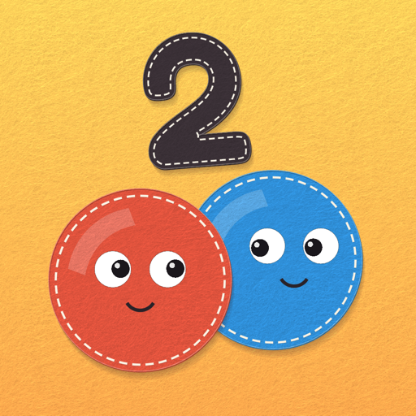
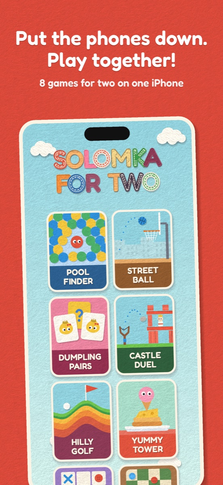
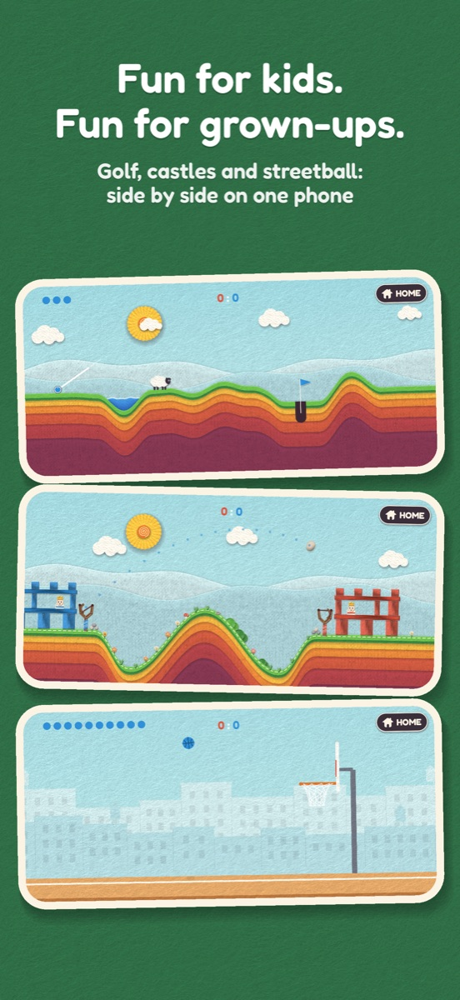
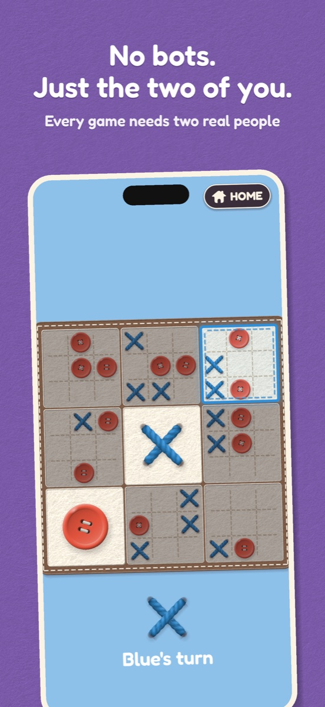
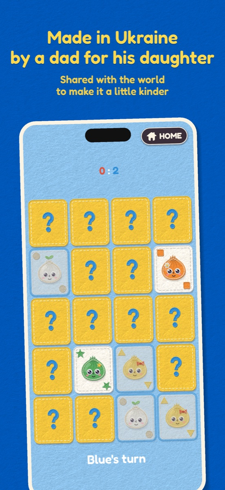

Solomka
2 player games for iPhone: two people, one phone




Put the phones down and play one together. Solomka is a collection of games for two people sharing one iPhone: a parent and a child, grandparents and grandkids, brothers and sisters, friends. There is no single-player mode and no bots. Every game needs two real people sitting side by side.
The games are easy for a seven-year-old and still exciting for a grown-up. Small catch-up twists (a sheep, a crow, a cat's paw) keep each match close, so a child can really beat a parent.
Eight games
- Hilly Golf: fling the ball over paper hills into the hole.
- Castle Duel: knock down the other castle with a slingshot.
- Streetball: flick the ball through the hoop.
- Yummy Tower: stack wobbly foods with eyes until the tower falls.
- Ultimate Tic Tac Toe: buttons against yarn crosses, nine boards in one.
- Flick Checkers: flick wooden checkers off the board.
- Dumpling Pairs: a memory game with Ukrainian dumplings.
- Pool Finder: both dig through a ball pit at once to find their colour.
Made in Ukraine
Solomka was made in Ukraine by a dad for his daughter. Now we share it with the world, hoping it makes a few evenings warmer and the world a little kinder.
Support
How do we play?
Two people hold one iPhone between them and take turns (in Pool Finder, both play at once). Golf, Castle Duel and Streetball are played with the phone turned sideways.
How do we leave a game?
Hold the HOME button in the top corner for a moment. It needs a hold, not a tap, so a game isn't left by accident.
Can I play alone against the phone?
No, on purpose. Solomka is about playing with someone next to you.
Which iPhones?
iPhone with iOS 17 or later: iPhone 11 and newer, iPhone SE (2nd and 3rd generation).
Anything else (a bug, an idea, a game you'd love to see): write to uanian@gmail.com.
Українською
Відкладіть телефони й пограйте в один разом. Solomka — ігри на двох на одному iPhone: тато й донька, мама й син, бабуся з онуком, друзі. Режиму проти бота немає: у кожну гру грають двоє живих людей поруч. Цікаво й дорослим, і дітям, а дитина може по-справжньому виграти в дорослого.
Створено в Україні татом для доньки. Ми ділимося нею зі світом, щоб він став трохи кращим і добрішим. Безкоштовно, без реклами й покупок, без збору даних, працює без інтернету.
Питання й ідеї: uanian@gmail.com